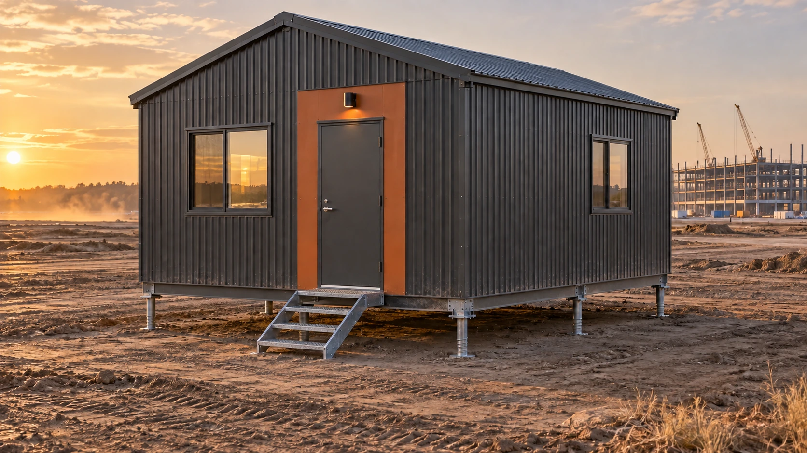
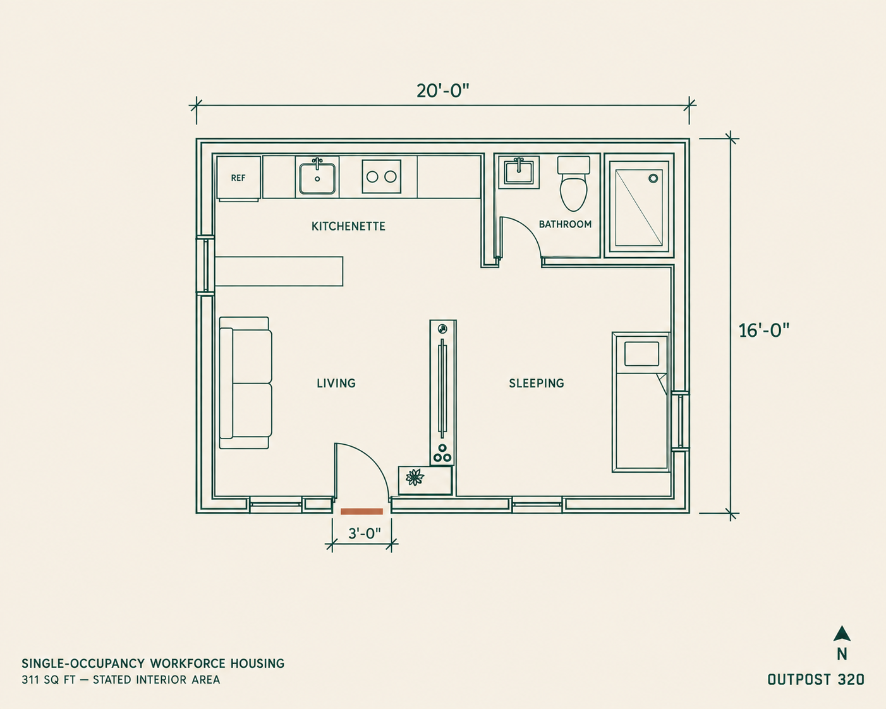

SUNDELLO / WORKFORCE HOUSING
A place to land.
After a day on site.
Meet Outpost 320. A compact space for one, with room to cook, unwind and recharge.
Explore the floor plan
THE PLAN / OUTPOST 320
The essentials.
All in one place.
A living area and kitchenette, a private bathroom and a dedicated sleeping area make the most of a compact rectangular plan.
- Living
- Space to sit and settle in.
- Kitchenette
- A compact counter for everyday meals.
- Bathroom
- An enclosed shower, toilet and washbasin.
- Sleeping
- A bed area within the open studio.
311 sq ft stated interior area; 320 sq ft nominal gross footprint. Illustration is conceptual. Final layout and dimensions require confirmation.
View full-size plan
FINISHES FOR YOUR PROJECT
Your project.
Your finish.
Exterior cladding, colors and entry details are selected to suit each client’s project. The images show one possible finish combination; final selections are confirmed during project planning.
Helical ground-screw supports are shown as a foundation concept. The final foundation, connections and installation depend on site conditions and engineering.